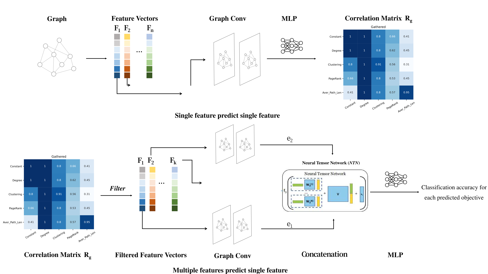
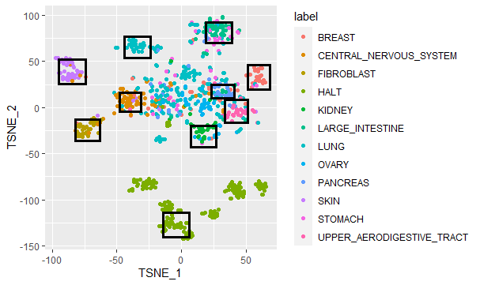
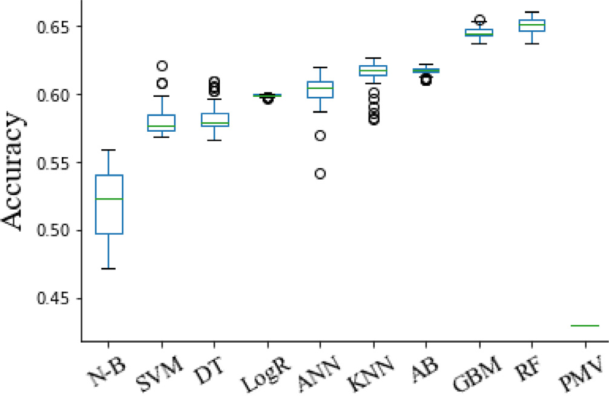
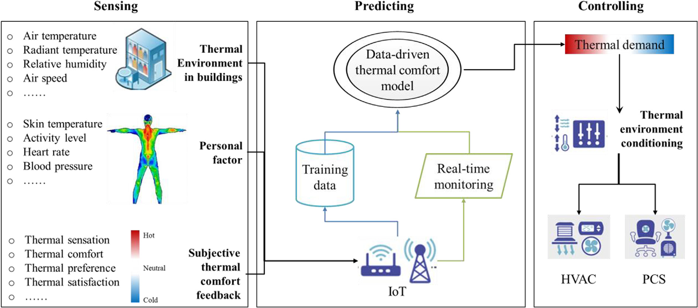

Jiaqing Xie(謝嘉慶)
I am a coming fourth year Undergraduate student in school of engineering & informatics at University of Edinburgh, supervised by
Siddharth Narayanaswamy and co-supervised by Tuan Anh Le (MIT CSAIL) and Eli Bingham (Broad Institute). I am supervised by Zhitao(Rex) Ying (Stanford) on graph neural network project.
Broadly, my research interests include machine learning, computational biology, graph neural networks and graphical models.
2021
|

|
Fea2Fea: Exploring Structural Feature Correlations via Graph Neural Networks
Jiaqing Xie, Rex Ying Proceedings of ECML-PKDD workshop, 2021 [link] [code] [oral] [poster] |
|

|
Variational Autoencoder for Anti-Cancer Drug Response Prediction
Hongyuan Dong*, Jiaqing Xie*, Zhi Jing and Dexin Ren ICLR AI4PH workshop, 2021 [pdf] [arxiv] [code] [poster] |
![[poster]](files/paper33poster.png){kind=link}
2020
|

|
Comparing machine learning algorithms in predicting thermal sensation using ASHRAE Comfort Database II
Maohui Luo, Jiaqing Xie, Yichen Yan, Zhihao Ke, Peiran Yu, Zi Wang and Jingsi Zhang Energy and Buildings, 2020 [pdf] [code] |
|

|
Review on occupant-centric thermal comfort sensing, predicting, and controlling
Jiaqing Xie, Haoyang Li, Chuting Li, Jingsi Zhang, Maohui Luo Energy and Buildings, 2020 [pdf] |
Autonomous Drone Route Design
One interesting industry related project on designing routes for the Autonomous Drones to fly over the points to record AQI value. I take the advantage of A* algorithm on searching for the shortest path from nearby two points but rectified some parts to satisfy 36 directions' requirement. Please refer to the project site and my report for more information. The program is mainly written by Java
TranportED: a Warehouse Autonomous Transportation Robot
TransportED is a service which helps you auto-mate your warehouse and aims to knockout thebiggest barrier to entry - the massive infrastruc-ture investment. Instead of a cost prohibitivecapital expenditure we aim to provide a swarmof autonomous robots, powerful software andour engineering expertise as a cost-effective andquick to deploy service that integrates seamlesslyin a variety of warehouse environments. Please refer to the code repo for more information
Machine Learning
Awards
Edinburgh-Hust Scholarship 2019, 2020, 2021
Freshman Arts Scholarship 2018
Freshman Football Championship 2018
Academic Services
Last Update: Aug/17/2021

UG3 student
University of Edinburgh
school of engineering
J.Xie-21@sms.ed.ac.uk
Google Scholar
Github
ResearchGate
Linkedin